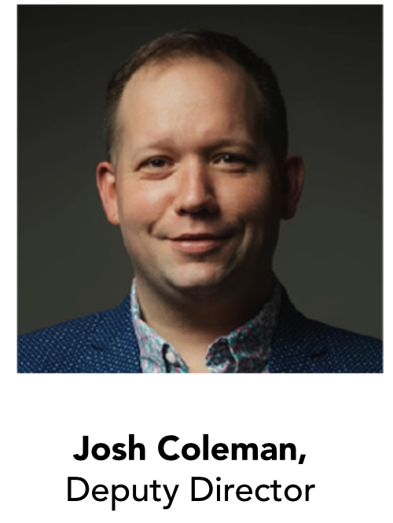
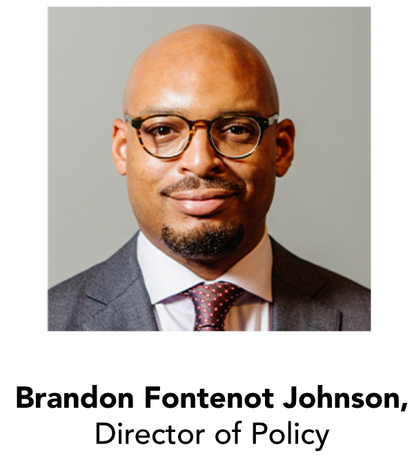
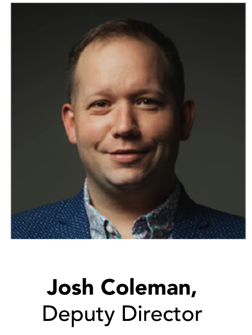
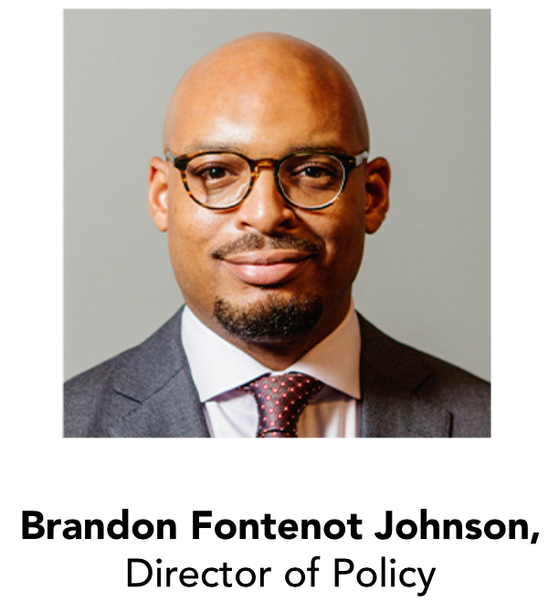
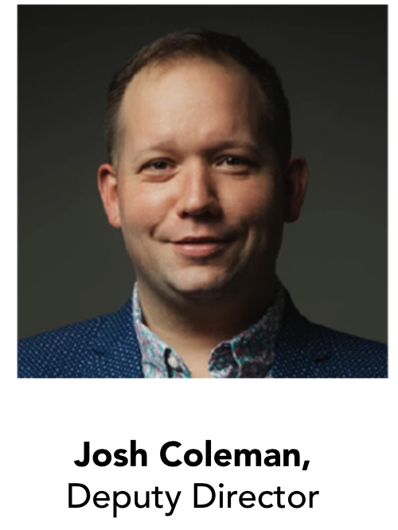
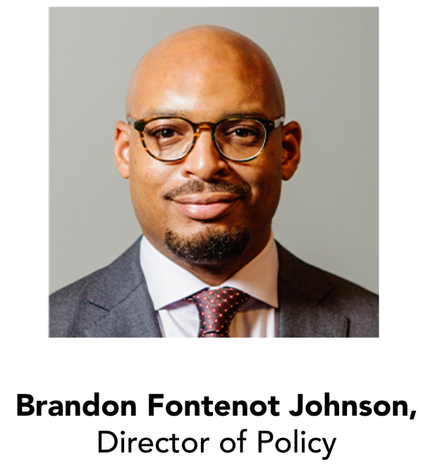

MEET OUR TEAM
 



Greetings,
For the past three years, the Division of Social Justice & Racial Equity has led Mayor Randal
L. Woodfin’s strategic objective of Global Legacy, Racial Equity and Social Justice. We have
focused our efforts on policy, advocacy and providing access to city government for Birmingham residents.
The Social Justice team recognizes that the pandemic intensified
inequalities for our most vulnerable residents. We are steadfast in our
goal of creating equity and eliminating barriers. We know the power
of advocacy and change through policy. The Division pursues change to city
processes, procedures and systems that produce equitable outcomes.
The Division of Social Justice & Racial Equity has confronted difficult social challenges,
yet stayed true to our principles of community collaboration. We pursue innovative solutions
by bringing community members together to share their ideas, expertise, and passion.
From the Women's Initiative, LGBTQ Advisory Board and Public Safety Task Force to the
Birmingham Civil Rights National Monument stakeholders, all bring valuable solutions
to creating a better Birmingham.
I invite you to take a look at our accomplishments and initiatives of 2022. The Social
Justice team will continue to work on behalf of the residents of Birmingham to achieve
a more equitable Birmingham.
In gratitude,
Denise E. Gilmore, Senior Director
Division of Social Justice and Racial Equity

